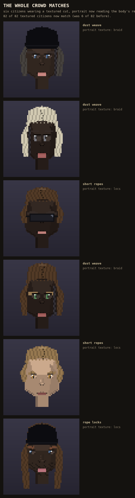

Last round fixed the hair picker you build your own face with. While getting that fix into the game this round, the same mistake turned up in the much bigger place: the portrait every citizen in the valley gets. Three haircuts have a real texture (ropes, locs); the portrait was picking a random one instead of reading the real one.
Checked on 300 people: 82 of 82 now match, up from 6 of 82 before. Already shipped, not a vote -- your own approved face never goes through this code at all, so it never moved.
